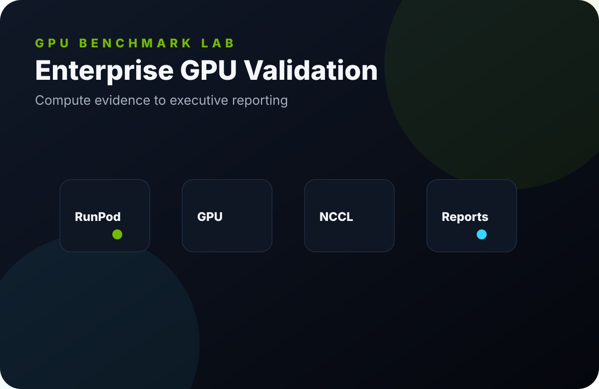
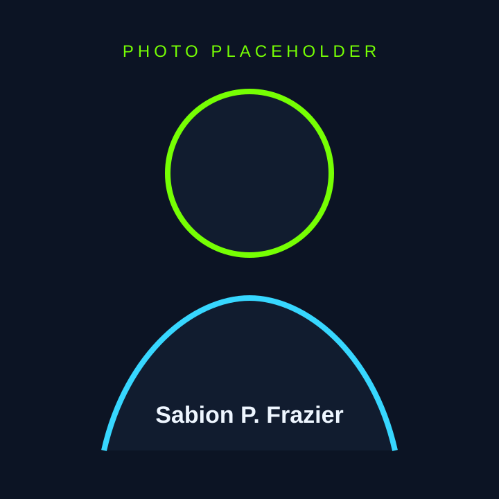
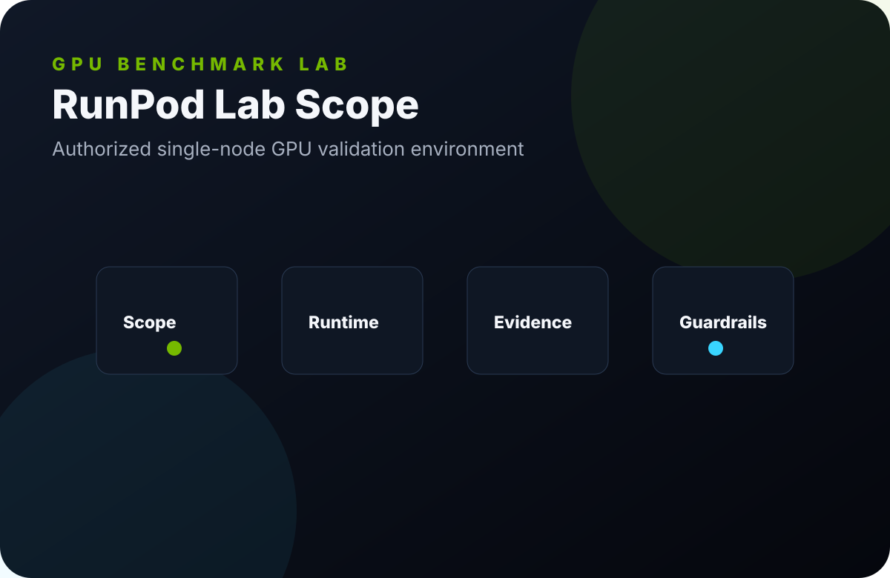
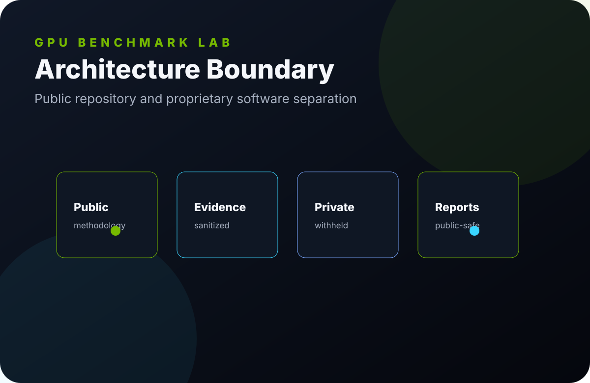
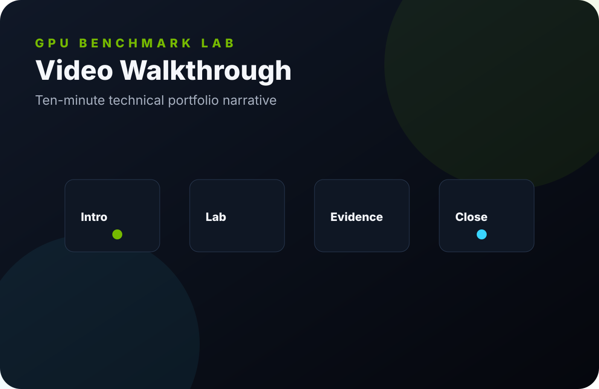

Problem
Enterprise AI teams need reliable evidence before accepting GPU infrastructure for training, inference, or customer delivery.
Launch Candidate · Enterprise AI Compute
A public-safe case study in RunPod GPU infrastructure, NVIDIA H200 SXM5 NV18 validation, CUDA/NCCL benchmark methodology, evidence discipline, and executive reporting.

About
Sabion P. Frazier focuses on Linux, HPC concepts, GPU infrastructure, distributed AI workloads, performance engineering, and enterprise documentation. The repository is designed to be credible for engineering interviews and understandable for business stakeholders.
Professional biography
Project
The repository explains why the project exists, how the lab was structured, how benchmarks were handled, how evidence was preserved, and how technical findings become customer-ready reporting.
Enterprise AI teams need reliable evidence before accepting GPU infrastructure for training, inference, or customer delivery.
Constrain the environment, collect safe runtime evidence, run bounded NCCL methodology, and document limitations clearly.
A launch-ready portfolio artifact that demonstrates technical depth without exposing proprietary GPUValidator implementation.
RunPod
The public environment is documented as an authorized single-node RunPod GPU lab. Provider details are limited to public-safe scope: node class, GPU family, runtime evidence, benchmark focus, and operational guardrails.

Hardware
Methodology
Numeric claims stay linked to public artifacts. Methodology-only collectives are labeled as such. Correctness, command shape, GPU count, runtime version, and redaction status are treated as first-class engineering details.
Read methodology./build/all_reduce_perf \
-b 8M -e 8G -f 2 \
-g 4 -w 5 -n 20
NCCL version 2.25.1+cuda12.8
# Out of bounds values : 0 OKArchitecture

Evidence
The public fixture preserves NCCL Tests output structure and selected non-sensitive values. It is not represented as customer evidence or a complete certification artifact.
Reports
Reports are organized for executives, infrastructure reviewers, GPU inventory owners, enterprise customers, and management stakeholders.
Open report catalogLessons Learned
Missing topology or collective output remains a limitation, not a marketing gap to fill with assumptions.
Production UI captures were replaced with public-safe SVG visuals for launch.
GPUValidator is positioned clearly as proprietary software while public methodology remains useful.
Documentation
Resume
The resume materials emphasize Linux, HPC, CUDA, NCCL, GPU infrastructure, distributed systems, RunPod, documentation, enterprise reporting, system design, performance engineering, and AI infrastructure.
Use concise bullets and deeper STAR stories depending on the audience.
Resume bulletsVideo
The video guide covers project overview, environment, hardware, RunPod, CUDA, NCCL, benchmarks, evidence, reports, lessons learned, and closing positioning.
Open video script
Contact
Update _config.yml with final public website, LinkedIn, GitHub, and email choices. No personal address or phone number should be published.
GitHub